Scan je balkon, schat je kWh
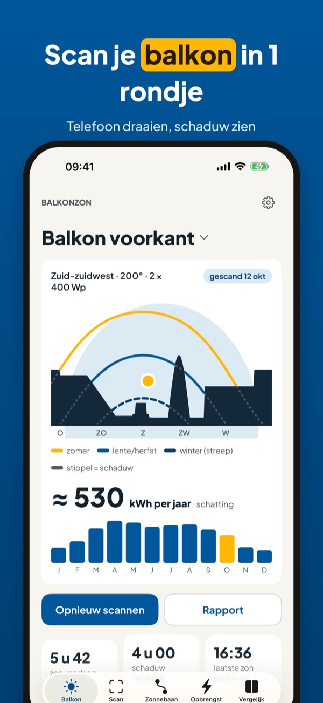
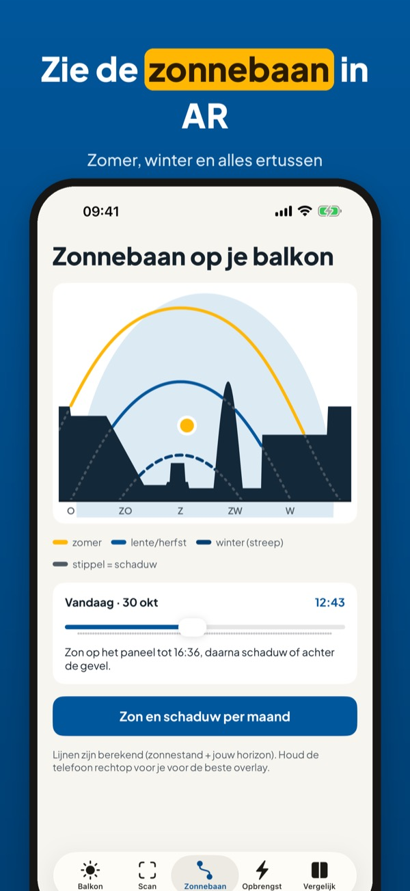
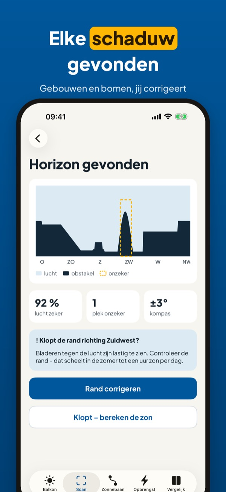
Balkonzon helpt je kiezen waar een plug-and-play zonnepaneel op je balkon het meest oplevert. Scan de horizon, bekijk de zonnebaan en krijg een schatting per maand en per jaar.
De horizonscan, de correctie, de zonnebaan in AR en zon en schaduw per maand gebruik je zonder aankoop. Balkonzon Plus is een eenmalige aankoop voor de kWh-schatting, paneelhoek, vergelijken, PDF-rapport en widget. Geen abonnement.
Alle kWh-getallen zijn schattingen op basis van zonnestand, jouw horizon en klimaatgemiddelden – geen belofte over opbrengst of besparing. Balkonzon geeft geen advies over elektrische installatie: laat de aansluiting controleren door een installateur. Balkonzon is niet verbonden aan een netbeheerder of merk.
Terms of Use (EULA): https://www.apple.com/legal/internet-services/itunes/dev/stdeula/
Privacy: https://baytechbv.github.io/privacy/balkonzon-nl/
Balkonkraftwerk: Sonne prüfen
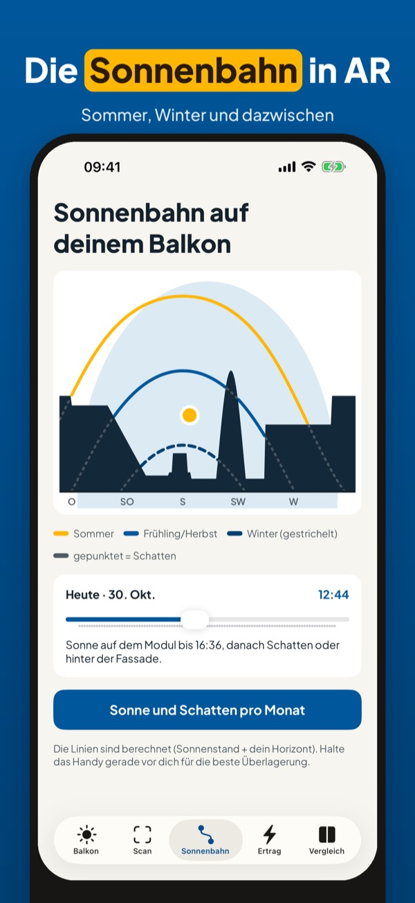
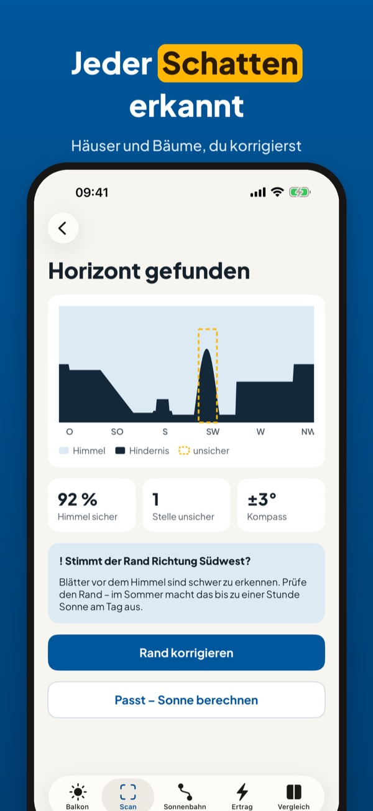
Balkonzon hilft dir, den besten Platz für ein Steckersolargerät auf dem Balkon zu finden. Horizont scannen, Sonnenbahn ansehen und eine Schätzung pro Monat und Jahr erhalten.
Horizont-Scan, Korrektur, Sonnenbahn in AR sowie Sonne und Schatten pro Monat nutzt du ohne Kauf. Balkonzon Plus ist ein Einmalkauf für kWh-Schätzung, Neigungstipp, Vergleich, PDF-Bericht und Widget. Kein Abo.
Alle kWh-Werte sind Schätzungen aus Sonnenstand, deinem Horizont und Klimamittelwerten – kein Versprechen zu Ertrag oder Ersparnis. Balkonzon gibt keine Elektro-Beratung: Lass den Anschluss von einer Fachkraft prüfen. Balkonzon gehört zu keinem Netzbetreiber und keiner Marke.
Terms of Use (EULA): https://www.apple.com/legal/internet-services/itunes/dev/stdeula/
Privacy: https://baytechbv.github.io/privacy/balkonzon-nl/
Panneau solaire de balcon
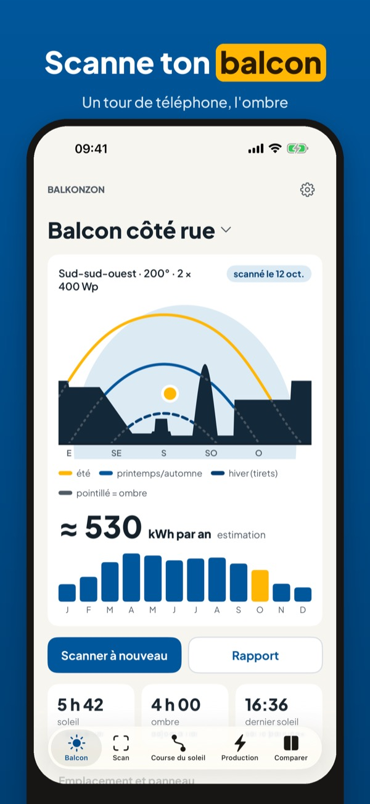
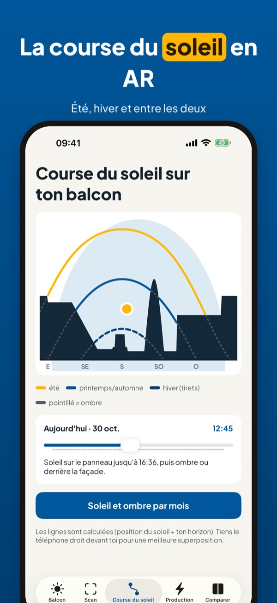
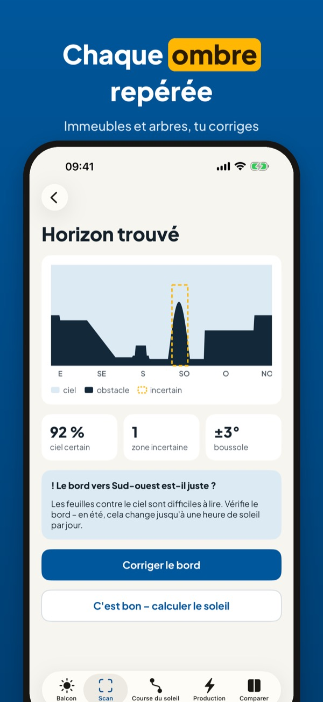
Balkonzon t’aide à trouver la meilleure place pour un kit solaire prêt à brancher sur ton balcon. Scanne l’horizon, vois la course du soleil et obtiens une estimation par mois et par an.
Le scan de l’horizon, la correction, la course du soleil en AR et le soleil et l’ombre par mois s’utilisent sans achat. Balkonzon Plus est un achat unique pour l’estimation en kWh, l’inclinaison, la comparaison, le rapport PDF et le widget. Sans abonnement.
Toutes les valeurs en kWh sont des estimations à partir de la position du soleil, de ton horizon et de moyennes climatiques – aucune promesse de production ou d’économie. Balkonzon ne donne pas de conseil en installation électrique : fais vérifier le raccordement par un électricien. Balkonzon n’est lié à aucun gestionnaire de réseau ni à aucune marque.
Terms of Use (EULA): https://www.apple.com/legal/internet-services/itunes/dev/stdeula/
Privacy: https://baytechbv.github.io/privacy/balkonzon-nl/
Pannello solare da balcone
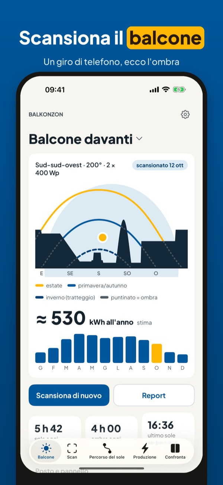
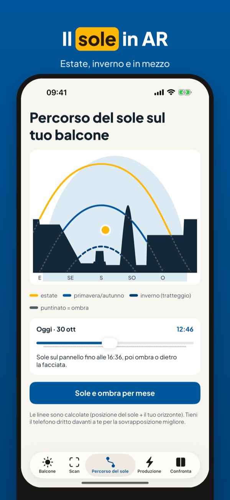
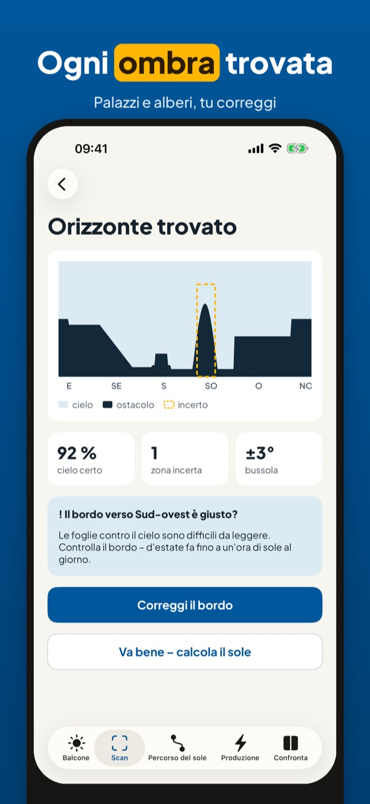
Balkonzon ti aiuta a trovare il posto migliore per un pannello solare plug-and-play sul balcone. Scansiona l’orizzonte, guarda il percorso del sole e ottieni una stima al mese e all’anno.
Scansione, correzione, percorso del sole in AR e sole e ombra per mese si usano senza acquisto. Balkonzon Plus è un acquisto unico per stima in kWh, inclinazione, confronto, report PDF e widget. Nessun abbonamento.
Tutti i valori in kWh sono stime basate su posizione del sole, il tuo orizzonte e medie climatiche – nessuna promessa di produzione o risparmio. Balkonzon non dà consigli sull’impianto elettrico: fai controllare il collegamento da un elettricista. Balkonzon non è legato a gestori di rete o marchi.
Terms of Use (EULA): https://www.apple.com/legal/internet-services/itunes/dev/stdeula/
Privacy: https://baytechbv.github.io/privacy/balkonzon-nl/
Panel słoneczny na balkonie
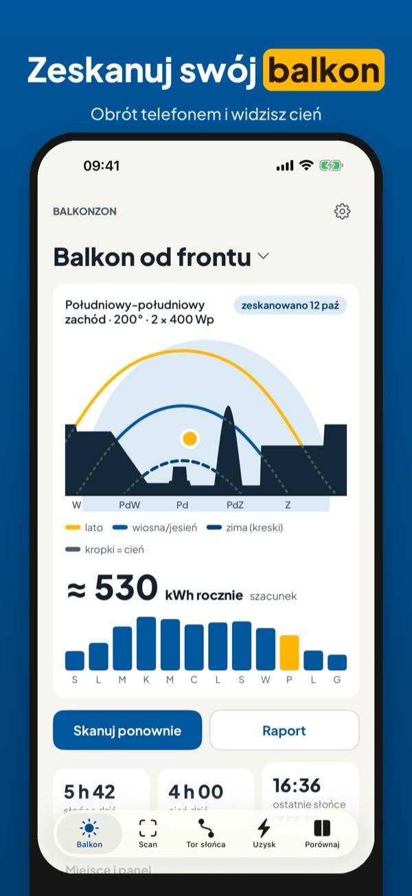
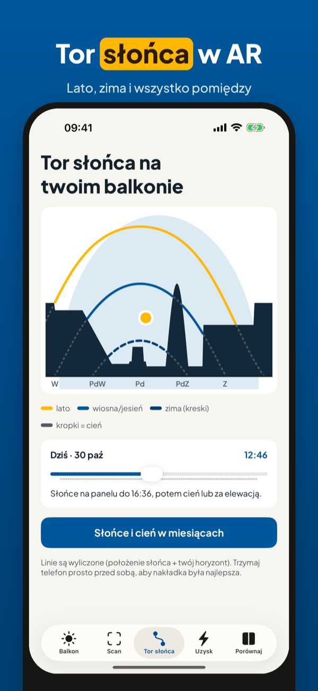
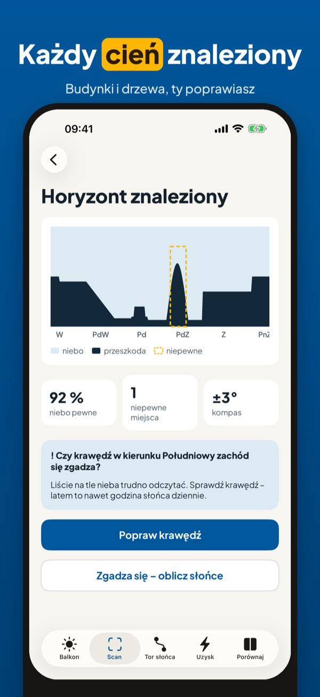
Balkonzon pomaga znaleźć najlepsze miejsce na balkonowy panel słoneczny typu plug-and-play. Zeskanuj horyzont, zobacz tor słońca i uzyskaj szacunek na miesiąc i na rok.
Skan horyzontu, poprawki, tor słońca w AR oraz słońce i cień w każdym miesiącu działają bez zakupu. Balkonzon Plus to jednorazowy zakup: szacunek kWh, kąt panelu, porównanie, raport PDF i widżet. Bez subskrypcji.
Wszystkie wartości kWh to szacunki na podstawie położenia słońca, twojego horyzontu i średnich klimatycznych – bez obietnicy uzysku ani oszczędności. Balkonzon nie doradza w sprawie instalacji elektrycznej: podłączenie niech sprawdzi elektryk. Balkonzon nie jest związany z operatorem sieci ani marką.
Terms of Use (EULA): https://www.apple.com/legal/internet-services/itunes/dev/stdeula/
Privacy: https://baytechbv.github.io/privacy/balkonzon-nl/